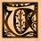
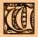
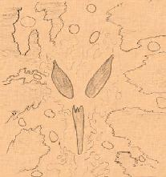
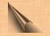
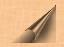

|
 o Call Forth Yog-Sothoth
For Yog-Sothoth is the Gate. He knoweth where the Old Ones came forth in times past and where They came forth again when the cycle returneth hen thou would call forth Yog-Sothoth thou must waite until the Sun is in the Fifth House with Saturn in trine. Then enter within the stones and draw about thee the Circle of evocation tracing the figurines with the mystic scimitar of Barzai. Circumambulate thrice widdershins and turning thy face to the South intone the conjuration that openeth the Gate: O Thou that dwelleth in the darkness of the Outer Void, come forth unto the Earth once more I entreat thee. O Thou who abideth beyond the Spheres of Time, hear my supplication. (Make the sign of Caput Draconis) O Thou who art the Gate and the Way come forth come forth Thy servant calleth Thee. (Make the Sign of Kish) BENATIR! CARARKAU! DEDOS! YOG-SOTHOTH! come forth! come forth! I speak the words, I Break Thy bonds, the seal is cast aside, pass through the Gate and enter the World I maketh Thy mighty Sign! (Make the Sign of the Voor) Trace the pentagram of Fire and say the incantation that causeth the Great One to manifest before the Gate: Ye Incantation Zyweso, wecato, keoso, Xunewe-rurom Xeverator. Menhatoy, Zywethorosto zuy, Zururogos Yog-Sothoth! Orary Ysgewot, homor athanatos nywe zumquros, Ysechyroroseth Xoneozebethoos Azathoth! Xono, Zuwezet, Quyhet kesos ysgeboth Nyarlathotep!; zuy rumoy quano duzy Xeuerator, YSHETO, THYYM, quaowe xeuerator phoe nagoo, Hastur! Hagathowos yachyros Gaba Sub-Niggurath! meweth, xosoy Vzewoth! (Make the sign of Cauda Draconis) TALUBSI! ADULA! ULU! BAACHUR! Come forth Yog-Sothoth! come forth!
* * * And then he will come unto thee and bring His Globes and He will give true answer to all you desire to know. And He shall reveal unto you the secret of His seal by which you may gain favour in the sight of the Old Ones when They once more walk the Earth. * * * And when His hour be past the curse of the Elder Lords shall be upon Him and draw Him forth beyond the Gate where He shall abide until He be summoned. {Editor's Note: Included on this page are a number of sigils and a magic circle. These illustrations are not in the Manuscript but were referenced from other texts, including, but not limited to; Key of Solomon (see Additional Ms. 36,674, British Museum Library) and Three Books of Occult Philosophy- Cornelius Agrippa. They are therefor not included in this version.} Know ye that the Globes of Yog-Sothoth be thirteen in number, and they be the powers of the Parasite-hoard which are His servitors and doeth His bidding in ye world.  Call them forth whenever thou shall have need of anything and they shall grant their powers unto ye when ye shall call them with the incantations and make their sign. His Globes have diverse names and appeareth in many forms. The first is GOMORY, who appeareth like a camel with a crown of gold upon his head. He commandeth twenty-six legions of infernal spirits and giveth the knowledge of all magical jewels and talismans. The second splrit is ZAGAN, who appeareth like a great bull, or a King terrible in aspect. Thirty-three legions bow before him and he teacheth the mysteries of the sea. The Third is called SYTRY, who taketh the form of a great Prince. He hath sixty legions and telleth the secrets of time yet to come. ELIGOR is the fourth spirit; he appeareth like a red man with a crown of iron upon his head. He commandeth likewise sixty legions and giveth the knowledge of victory in war, and telleth of strife to come. The fifth spirit is called DURSON and hath with him twenty-two familiar demons and appeareth like a raven. He can reveal all occult secrets and tell of past times. The sixth is VUAL his form is of a dark cloud and he teacheth all manner of ancient tongues. The seventh is SCOR, who appeareth like a white snake, he bringeth money at your command. ALGOR is the eighth spirit, he appeareth in the likeness of a fly. He can tell of all secret things and granteth the favours of great Princes and Kings. The ninth is SEFON. He appeareth like a man with a green face and hath the power to show where treasure is hidden. Tenth is PARTAS, He hath the form of a great vulture, and can tell ye the vertues of herbs, stones, make ye invisible and restore sight which is lost. The eleventh spirit is GAMOR, and when he appeareth like a man can marvellously enform ye of how to win favours of great persons and can drive away any spirit that guardeth over treasure. Twelfth is UMBRA, He appeareth like a giant; he can convey money from place to place if thou bid him and bestow the love of any woman that thou desirest. The thirteenth spirit is ANABOTH who taketh the form of a yellow toad. He hath the power to make thee marvellous cunning in nigromancy, he can drive away any devil that would hinder ye and tell of strange and hidden things.
When thou wouldst call up ye Globes thou must first make upon the earth this sign: And evoke of them thus: EZPHARES, OLYARAM, IRION-ESYTION,
ERYONA, OREA, ORASYM, MOZIM!
By these words and in the name of YOG-SOTHOTH who is thy master, I do most powerfulIy summon and call ye up O . . . . N . . . .That thou mayest aid me in my hour of need. Come forth I command ye by the sign of Power! (Make the sign of Voor) And then the spirit shall appear unto thee and grant thy requests. But if he remaineth invisible to thine eye, blow the dust of Ibn Ghazi and he will immediately take his proper form. When thou wouldst banish what ye have called up eraze thou their sign with the scimitar of Barzai and utter the words: CALDULECH ! DALMALEY ! CADAT !
(and seal with the sign of Koth).
Nota: If on their appearance the spirits obstinately refuse to speak cleave the air thrice with the scimitar and say: ADRICANOROM DUMASO! And their tongue shall be loosened and they will be compelled to give true answer.
|
| Summon Shub-Niggurath Ye Black |
| Ritual for opening the Gate  |